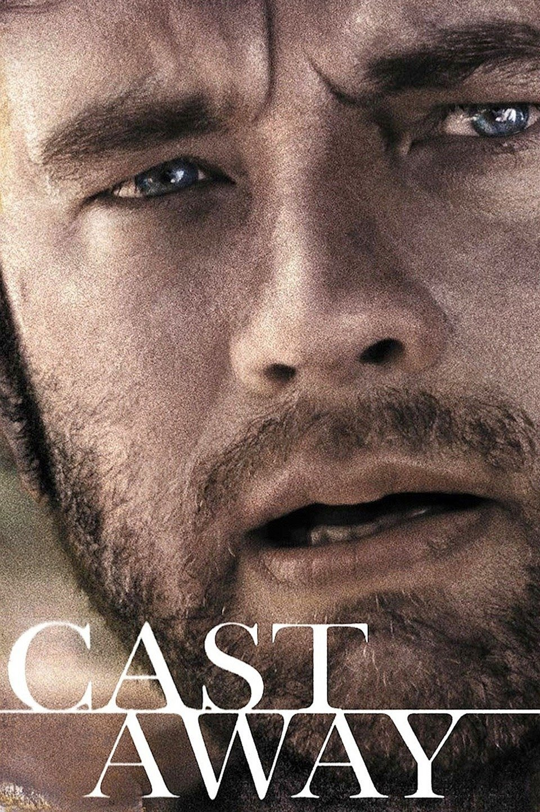

HOME
Obsessively punctual FedEx executive Chuck Noland (Tom Hanks) is en route to an assignment in Malaysia when his plane crashes over the Pacific Ocean during a storm. The sole survivor of the flight, Chuck washes ashore on a deserted island. When his efforts to sail away and contact help fail, Chuck learns how to survive on the island, where he remains for years, accompanied by only his handmade volleyball friend, Wilson. Will Chuck ever return to civilization and reunite with his loved ones?

Company Credit: ImageMovers, Playtone
Release Date: Dec 22, 2000
Genres: Survival Drama
Rating: PG-13
Running Time: 2h 24m
Watch Trailer Here